Calibration of the flooding model¶
Model¶
The simulator predicts the water height  depending on the flowrate
depending on the flowrate  .
.
We consider the following four variable:
- : the river flowrate (
 )
) : the Strickler coefficient (
 )
) : the downstream riverbed level (m)
: the downstream riverbed level (m) : the upstream riverbed level (m)
: the upstream riverbed level (m)
When the Strickler coefficient increases, the riverbed generates less friction to the water flow.
Parameters¶
We consider the following parameters:
the length of the river
 = 5000 (m),
= 5000 (m),the width of the river = 300 (m).
Outputs¶
We make the hypothesis that the slope of the river is nonpositive and close to zero, which implies:

if  . The height of the river is:
. The height of the river is:

for any  .
.
Distribution¶
We assume that the river flowrate has the following truncated Gumbel distribution:
Variable |
Distribution |
|---|---|
Q |
Gumbel(scale=558, mode=1013)>0 |
Parameters to calibrate¶
The vector of parameters to calibrate is:

The variables to calibrate are  and are set to the following values:
and are set to the following values:

Observations¶
In this section, we describe the statistical model associated with the  observations. The errors of the water heights are associated with a gaussian distribution with a zero mean and a standard variation equal to:
observations. The errors of the water heights are associated with a gaussian distribution with a zero mean and a standard variation equal to:

Therefore, the observed water heights are:

for  where
where

and we make the hypothesis that the observation errors are independent. We consider a sample size equal to:
The observations are the couples  , i.e. each observation is a couple made of the flowrate and the corresponding river height.
, i.e. each observation is a couple made of the flowrate and the corresponding river height.
Analysis¶
In this model, the variables and are not identifiables, since only the difference  matters. Hence, calibrating this model requires some regularization.
matters. Hence, calibrating this model requires some regularization.
Generate the observations¶
[1]:
import numpy as np
import openturns as ot
ot.ResourceMap.SetAsUnsignedInteger('Normal-SmallDimension', 1)
We define the model  which has 4 inputs and one output H.
which has 4 inputs and one output H.
The nonlinear least squares does not take into account for bounds in the parameters. Therefore, we ensure that the output is computed whatever the inputs. The model fails into two situations:
if
 ,
,if
 .
.
In these cases, we return an infinite number, so that the optimization algorithm does not get trapped.
[2]:
def functionFlooding(X) :
L = 5.0e3
B = 300.0
Q, K_s, Z_v, Z_m = X
alpha = (Z_m - Z_v)/L
if alpha < 0.0 or K_s <= 0.0:
H = np.inf
else:
H = (Q/(K_s*B*np.sqrt(alpha)))**(3.0/5.0)
return [H]
[3]:
g = ot.PythonFunction(4, 1, functionFlooding)
g = ot.MemoizeFunction(g)
g.setOutputDescription(["H (m)"])
Create the input distribution for .
[4]:
Q = ot.Gumbel(558.0, 1013.0)
Q = ot.TruncatedDistribution(Q,ot.TruncatedDistribution.LOWER)
Q.setDescription(["Q (m3/s)"])
Q
[4]:
TruncatedDistribution(class=ParametrizedDistribution parameters=class=GumbelAB name=Unnamed a=1013 b=558 distribution=class=Gumbel name=Gumbel dimension=1 alpha=0.00179211 beta=1013, bounds = [0, (19000.8) +inf[)
Set the parameters to be calibrated.
[5]:
K_s = ot.Dirac(30.0)
Z_v = ot.Dirac(50.0)
Z_m = ot.Dirac(55.0)
K_s.setDescription(["Ks (m^(1/3)/s)"])
Z_v.setDescription(["Zv (m)"])
Z_m.setDescription(["Zm (m)"])
Create the joint input distribution.
[6]:
inputRandomVector = ot.ComposedDistribution([Q, K_s, Z_v, Z_m])
Create a Monte-Carlo sample of the output H.
[7]:
nbobs = 100
inputSample = inputRandomVector.getSample(nbobs)
outputH = g(inputSample)
Observe the distribution of the output H.
[8]:
ot.HistogramFactory().build(outputH).drawPDF()
[8]:
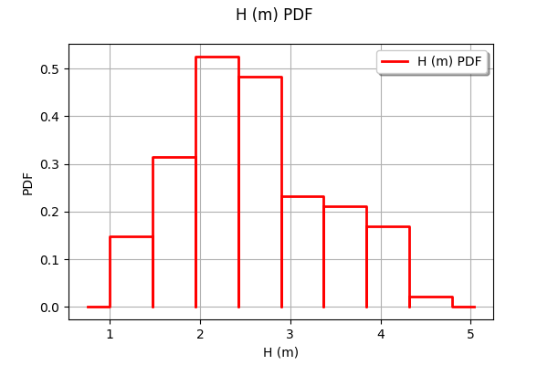
Generate the observation noise and add it to the output of the model.
[9]:
sigmaObservationNoiseH = 0.1 # (m)
noiseH = ot.Normal(0.,sigmaObservationNoiseH)
sampleNoiseH = noiseH.getSample(nbobs)
Hobs = outputH + sampleNoiseH
Plot the Y observations versus the X observations.
[10]:
Qobs = inputSample[:,0]
[11]:
graph = ot.Graph("Observations","Q (m3/s)","H (m)",True)
cloud = ot.Cloud(Qobs,Hobs)
graph.add(cloud)
graph
[11]:
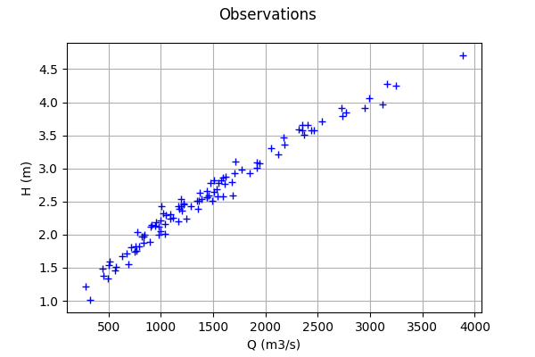
A visualisation class¶
[12]:
"""
A graphics class to analyze the results of calibration.
"""
import pylab as pl
import openturns as ot
import openturns.viewer as otv
class CalibrationAnalysis:
def __init__(self,calibrationResult,model,inputObservations,outputObservations):
"""
Plots the prior and posterior distribution of the calibrated parameter theta.
Parameters
----------
calibrationResult : :class:`~openturns.calibrationResult`
The result of a calibration.
model : 2-d sequence of float
The function to calibrate.
inputObservations : :class:`~openturns.Sample`
The sample of input values of the model linked to the observations.
outputObservations : 2-d sequence of float
The sample of output values of the model linked to the observations.
"""
self.model = model
self.outputAtPrior = None
self.outputAtPosterior = None
self.calibrationResult = calibrationResult
self.observationColor = "blue"
self.priorColor = "red"
self.posteriorColor = "green"
self.inputObservations = inputObservations
self.outputObservations = outputObservations
self.unitlength = 6 # inch
# Compute yAtPrior
meanPrior = calibrationResult.getParameterPrior().getMean()
model.setParameter(meanPrior)
self.outputAtPrior=model(inputObservations)
# Compute yAtPosterior
meanPosterior = calibrationResult.getParameterPosterior().getMean()
model.setParameter(meanPosterior)
self.outputAtPosterior=model(inputObservations)
return None
def drawParameterDistributions(self):
"""
Plots the prior and posterior distribution of the calibrated parameter theta.
"""
thetaPrior = self.calibrationResult.getParameterPrior()
thetaDescription = thetaPrior.getDescription()
thetaPosterior = self.calibrationResult.getParameterPosterior()
thetaDim = thetaPosterior.getDimension()
fig = pl.figure(figsize=(12, 4))
for i in range(thetaDim):
graph = ot.Graph("",thetaDescription[i],"PDF",True,"topright")
# Prior distribution
thetaPrior_i = thetaPrior.getMarginal(i)
priorPDF = thetaPrior_i.drawPDF()
priorPDF.setColors([self.priorColor])
priorPDF.setLegends(["Prior"])
graph.add(priorPDF)
# Posterior distribution
thetaPosterior_i = thetaPosterior.getMarginal(i)
postPDF = thetaPosterior_i.drawPDF()
postPDF.setColors([self.posteriorColor])
postPDF.setLegends(["Posterior"])
graph.add(postPDF)
'''
If the prior is a Dirac, set the vertical axis bounds to the posterior.
Otherwise, the Dirac set to [0,1], where the 1 can be much larger
than the maximum PDF of the posterior.
'''
if (thetaPrior_i.getName()=="Dirac"):
# The vertical (PDF) bounds of the posterior
postbb = postPDF.getBoundingBox()
pdf_upper = postbb.getUpperBound()[1]
pdf_lower = postbb.getLowerBound()[1]
# Set these bounds to the graph
bb = graph.getBoundingBox()
graph_upper = bb.getUpperBound()
graph_upper[1] = pdf_upper
bb.setUpperBound(graph_upper)
graph_lower = bb.getLowerBound()
graph_lower[1] = pdf_lower
bb.setLowerBound(graph_lower)
graph.setBoundingBox(bb)
# Add it to the graphics
ax = fig.add_subplot(1, thetaDim, i+1)
_ = otv.View(graph, figure=fig, axes=[ax])
return fig
def drawObservationsVsPredictions(self):
"""
Plots the output of the model depending
on the output observations before and after calibration.
"""
ySize = self.outputObservations.getSize()
yDim = self.outputObservations.getDimension()
graph = ot.Graph("","Observations","Predictions",True,"topleft")
# Plot the diagonal
if (yDim==1):
graph = self._drawObservationsVsPredictions1Dimension(self.outputObservations,self.outputAtPrior,self.outputAtPosterior)
elif (ySize==1):
outputObservations = ot.Sample(self.outputObservations[0],1)
outputAtPrior = ot.Sample(self.outputAtPrior[0],1)
outputAtPosterior = ot.Sample(self.outputAtPosterior[0],1)
graph = self._drawObservationsVsPredictions1Dimension(outputObservations,outputAtPrior,outputAtPosterior)
else:
fig = pl.figure(figsize=(self.unitlength*yDim, self.unitlength))
for i in range(yDim):
outputObservations = self.outputObservations[:,i]
outputAtPrior = self.outputAtPrior[:,i]
outputAtPosterior = self.outputAtPosterior[:,i]
graph = self._drawObservationsVsPredictions1Dimension(outputObservations,outputAtPrior,outputAtPosterior)
ax = fig.add_subplot(1, yDim, i+1)
_ = otv.View(graph, figure=fig, axes=[ax])
return graph
def _drawObservationsVsPredictions1Dimension(self,outputObservations,outputAtPrior,outputAtPosterior):
"""
Plots the output of the model depending
on the output observations before and after calibration.
Can manage only 1D samples.
"""
yDim = outputObservations.getDimension()
ydescription = outputObservations.getDescription()
xlabel = "%s Observations" % (ydescription[0])
ylabel = "%s Predictions" % (ydescription[0])
graph = ot.Graph("",xlabel,ylabel,True,"topleft")
# Plot the diagonal
if (yDim==1):
curve = ot.Curve(outputObservations, outputObservations)
curve.setColor(self.observationColor)
graph.add(curve)
else:
raise TypeError('Output observations are not 1D.')
# Plot the predictions before
yPriorDim = outputAtPrior.getDimension()
if (yPriorDim==1):
cloud = ot.Cloud(outputObservations, outputAtPrior)
cloud.setColor(self.priorColor)
cloud.setLegend("Prior")
graph.add(cloud)
else:
raise TypeError('Output prior predictions are not 1D.')
# Plot the predictions after
yPosteriorDim = outputAtPosterior.getDimension()
if (yPosteriorDim==1):
cloud = ot.Cloud(outputObservations, outputAtPosterior)
cloud.setColor(self.posteriorColor)
cloud.setLegend("Posterior")
graph.add(cloud)
else:
raise TypeError('Output posterior predictions are not 1D.')
return graph
def drawResiduals(self):
"""
Plot the distribution of the residuals and
the distribution of the observation errors.
"""
ySize = self.outputObservations.getSize()
yDim = self.outputObservations.getDimension()
yPriorSize = self.outputAtPrior.getSize()
yPriorDim = self.outputAtPrior.getDimension()
if (yDim==1):
observationsError = self.calibrationResult.getObservationsError()
graph = self._drawResiduals1Dimension(self.outputObservations,self.outputAtPrior,self.outputAtPosterior,observationsError)
elif (ySize==1):
outputObservations = ot.Sample(self.outputObservations[0],1)
outputAtPrior = ot.Sample(self.outputAtPrior[0],1)
outputAtPosterior = ot.Sample(self.outputAtPosterior[0],1)
observationsError = self.calibrationResult.getObservationsError()
# In this case, we cannot draw observationsError ; just
# pass the required input argument, but it is not actually used.
graph = self._drawResiduals1Dimension(outputObservations,outputAtPrior,outputAtPosterior,observationsError)
else:
observationsError = self.calibrationResult.getObservationsError()
fig = pl.figure(figsize=(self.unitlength*yDim, self.unitlength))
for i in range(yDim):
outputObservations = self.outputObservations[:,i]
outputAtPrior = self.outputAtPrior[:,i]
outputAtPosterior = self.outputAtPosterior[:,i]
observationsErrorYi = observationsError.getMarginal(i)
graph = self._drawResiduals1Dimension(outputObservations,outputAtPrior,outputAtPosterior,observationsErrorYi)
ax = fig.add_subplot(1, yDim, i+1)
_ = otv.View(graph, figure=fig, axes=[ax])
return graph
def _drawResiduals1Dimension(self,outputObservations,outputAtPrior,outputAtPosterior,observationsError):
"""
Plot the distribution of the residuals and
the distribution of the observation errors.
Can manage only 1D samples.
"""
ydescription = outputObservations.getDescription()
xlabel = "%s Residuals" % (ydescription[0])
graph = ot.Graph("Residuals analysis",xlabel,"Probability distribution function",True,"topright")
yDim = outputObservations.getDimension()
yPriorDim = outputAtPrior.getDimension()
yPosteriorDim = outputAtPrior.getDimension()
if (yDim==1) and (yPriorDim==1) :
posteriorResiduals = outputObservations - outputAtPrior
kernel = ot.KernelSmoothing()
fittedDist = kernel.build(posteriorResiduals)
residualPDF = fittedDist.drawPDF()
residualPDF.setColors([self.priorColor])
residualPDF.setLegends(["Prior"])
graph.add(residualPDF)
else:
raise TypeError('Output prior observations are not 1D.')
if (yDim==1) and (yPosteriorDim==1) :
posteriorResiduals = outputObservations - outputAtPosterior
kernel = ot.KernelSmoothing()
fittedDist = kernel.build(posteriorResiduals)
residualPDF = fittedDist.drawPDF()
residualPDF.setColors([self.posteriorColor])
residualPDF.setLegends(["Posterior"])
graph.add(residualPDF)
else:
raise TypeError('Output posterior observations are not 1D.')
# Plot the distribution of the observation errors
if (observationsError.getDimension()==1):
# In the other case, we just do not plot
obserrgraph = observationsError.drawPDF()
obserrgraph.setColors([self.observationColor])
obserrgraph.setLegends(["Observation errors"])
graph.add(obserrgraph)
return graph
def drawObservationsVsInputs(self):
"""
Plots the observed output of the model depending
on the observed input before and after calibration.
"""
xSize = self.inputObservations.getSize()
ySize = self.outputObservations.getSize()
xDim = self.inputObservations.getDimension()
yDim = self.outputObservations.getDimension()
xdescription = self.inputObservations.getDescription()
ydescription = self.outputObservations.getDescription()
# Observations
if (xDim==1) and (yDim==1):
graph = self._drawObservationsVsInputs1Dimension(self.inputObservations,self.outputObservations,self.outputAtPrior,self.outputAtPosterior)
elif (xSize==1) and (ySize==1):
inputObservations = ot.Sample(self.inputObservations[0],1)
outputObservations = ot.Sample(self.outputObservations[0],1)
outputAtPrior = ot.Sample(self.outputAtPrior[0],1)
outputAtPosterior = ot.Sample(self.outputAtPosterior[0],1)
graph = self._drawObservationsVsInputs1Dimension(inputObservations,outputObservations,outputAtPrior,outputAtPosterior)
else:
fig = pl.figure(figsize=(xDim*self.unitlength, yDim*self.unitlength))
for i in range(xDim):
for j in range(yDim):
k = xDim * j + i
inputObservations = self.inputObservations[:,i]
outputObservations = self.outputObservations[:,j]
outputAtPrior = self.outputAtPrior[:,j]
outputAtPosterior = self.outputAtPosterior[:,j]
graph = self._drawObservationsVsInputs1Dimension(inputObservations,outputObservations,outputAtPrior,outputAtPosterior)
ax = fig.add_subplot(yDim, xDim, k+1)
_ = otv.View(graph, figure=fig, axes=[ax])
return graph
def _drawObservationsVsInputs1Dimension(self,inputObservations,outputObservations,outputAtPrior,outputAtPosterior):
"""
Plots the observed output of the model depending
on the observed input before and after calibration.
Can manage only 1D samples.
"""
xDim = inputObservations.getDimension()
if (xDim!=1):
raise TypeError('Input observations are not 1D.')
yDim = outputObservations.getDimension()
xdescription = inputObservations.getDescription()
ydescription = outputObservations.getDescription()
graph = ot.Graph("",xdescription[0],ydescription[0],True,"topright")
# Observations
if (yDim==1):
cloud = ot.Cloud(inputObservations,outputObservations)
cloud.setColor(self.observationColor)
cloud.setLegend("Observations")
graph.add(cloud)
else:
raise TypeError('Output observations are not 1D.')
# Model outputs before calibration
yPriorDim = outputAtPrior.getDimension()
if (yPriorDim==1):
cloud = ot.Cloud(inputObservations,outputAtPrior)
cloud.setColor(self.priorColor)
cloud.setLegend("Prior")
graph.add(cloud)
else:
raise TypeError('Output prior predictions are not 1D.')
# Model outputs after calibration
yPosteriorDim = outputAtPosterior.getDimension()
if (yPosteriorDim==1):
cloud = ot.Cloud(inputObservations,outputAtPosterior)
cloud.setColor(self.posteriorColor)
cloud.setLegend("Posterior")
graph.add(cloud)
else:
raise TypeError('Output posterior predictions are not 1D.')
return graph
Setting the calibration parameters¶
Define the value of the reference values of the  parameter. In the bayesian framework, this is called the mean of the prior gaussian distribution. In the data assimilation framework, this is called the background.
parameter. In the bayesian framework, this is called the mean of the prior gaussian distribution. In the data assimilation framework, this is called the background.
[13]:
KsInitial = 20.
ZvInitial = 49.
ZmInitial = 51.
thetaPrior = ot.Point([KsInitial,ZvInitial,ZmInitial])
The following statement create the calibrated function from the model. The calibrated parameters Ks, Zv, Zm are at indices 1, 2, 3 in the inputs arguments of the model.
[14]:
calibratedIndices = [1,2,3]
mycf = ot.ParametricFunction(g, calibratedIndices, thetaPrior)
Calibration with linear least squares¶
The LinearLeastSquaresCalibration class performs the linear least squares calibration by linearizing the model in the neighbourhood of the reference point.
[15]:
algo = ot.LinearLeastSquaresCalibration(mycf, Qobs, Hobs, thetaPrior, "SVD")
The run method computes the solution of the problem.
[16]:
algo.run()
[17]:
calibrationResult = algo.getResult()
The getParameterMAP method returns the maximum of the posterior distribution of .
[18]:
thetaStar = calibrationResult.getParameterMAP()
thetaStar
[18]:
[-1.01509e+08,-1.11013e+24,-1.11013e+24]
In this case, we see that there seems to be a great distance from the reference value of to the optimum: the values seem too large in magnitude. The value of the optimum  is nonpositive. In fact, there is an identification problem because the Jacobian matrix is rank-degenerate.
is nonpositive. In fact, there is an identification problem because the Jacobian matrix is rank-degenerate.
Diagnostic of the identification issue¶
In this section, we show how to diagnose the identification problem.
The getParameterPosterior method returns the posterior gaussian distribution of .
[19]:
distributionPosterior = calibrationResult.getParameterPosterior()
distributionPosterior
[19]:
Normal(mu = [-1.01509e+08,-1.11013e+24,-1.11013e+24], sigma = [6.62225e+27,5.20609e+33,5.20609e+33], R = [[ 1 1.40425e-26 -1.40425e-26 ]
[ 1.40425e-26 1 1 ]
[ -1.40425e-26 1 1 ]])
We see that there is a large covariance matrix diagonal.
Let us compute a 95% confidence interval for the solution .
[20]:
distributionPosterior.computeBilateralConfidenceIntervalWithMarginalProbability(0.95)[0]
[20]:
[-2.24441e+26, 2.24441e+26]
[-1.76444e+32, 1.76444e+32]
[-1.76444e+32, 1.76444e+32]
The confidence interval is very large.
[21]:
mycf.setParameter(thetaPrior)
thetaDim = thetaPrior.getDimension()
jacobianMatrix = ot.Matrix(nbobs,thetaDim)
for i in range(nbobs):
jacobianMatrix[i,:] = mycf.parameterGradient(Qobs[i]).transpose()
jacobianMatrix[0:5,:]
[21]:
5x3
[[ -0.133438 0.667192 -0.667192 ]
[ -0.170638 0.853188 -0.853188 ]
[ -0.0808351 0.404175 -0.404175 ]
[ -0.0546252 0.273126 -0.273126 ]
[ -0.105857 0.529285 -0.529285 ]]
[22]:
jacobianMatrix.computeSingularValues()
[22]:
[9.72877,1.6948e-10,5.11532e-26]
We can see that there are two singular values which are relatively close to zero.
This explains why the Jacobian matrix is close to being rank-degenerate.
Conclusion of the linear least squares calibration¶
There are several methods to solve the problem.
Given that the problem is not identifiable, we can use some regularization method. Two methods are provided in the library: the gaussian linear least squares
GaussianLinearCalibrationand the gaussian non linear least squaresGaussianNonlinearCalibration.We can change the problem, replacing it with a problem which is identifiable. In the flooding model, replacing with allows to solve the issue.
Calibration with non linear least squares¶
The NonLinearLeastSquaresCalibration class performs the non linear least squares calibration by minimizing the squared euclidian norm between the predictions and the observations.
[23]:
algo = ot.NonLinearLeastSquaresCalibration(mycf, Qobs, Hobs, thetaPrior)
The run method computes the solution of the problem.
[24]:
algo.run()
[25]:
calibrationResult = algo.getResult()
Analysis of the results¶
The getParameterMAP method returns the maximum of the posterior distribution of .
[26]:
thetaMAP = calibrationResult.getParameterMAP()
thetaMAP
[26]:
[33.5324,47.9616,52.0384]
We can compute a 95% confidence interval of the parameter .
This confidence interval is based on bootstrap, based on a sample size equal to 100 (as long as the value of the ResourceMap key “NonLinearLeastSquaresCalibration-BootstrapSize” is unchanged). This confidence interval reflects the sensitivity of the optimum to the variability in the observations.
[27]:
thetaPosterior = calibrationResult.getParameterPosterior()
thetaPosterior.computeBilateralConfidenceIntervalWithMarginalProbability(0.95)[0]
[27]:
[29.0757, 37.6979]
[47.2008, 48.3945]
[51.6055, 52.7992]
In this case, the value of the parameter is quite accurately computed, but there is a relatively large uncertainty on the values of and .
[28]:
mypcr = CalibrationAnalysis(calibrationResult,mycf, Qobs,Hobs)
[29]:
graph = mypcr.drawObservationsVsInputs()
graph.setLegendPosition("topleft")
graph
[29]:
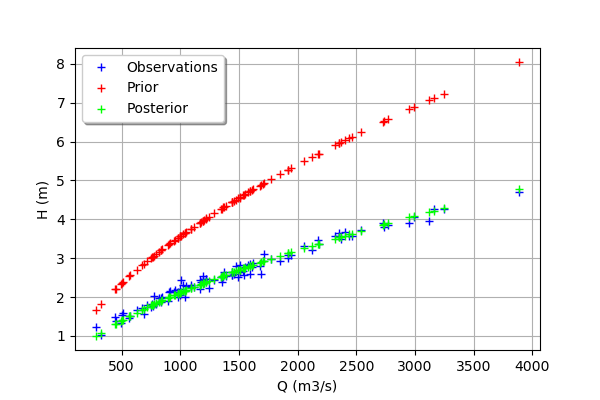
We see that there is a good fit after calibration, since the predictions after calibration (i.e. the green crosses) are close to the observations (i.e. the blue crosses).
[30]:
mypcr.drawObservationsVsPredictions()
[30]:
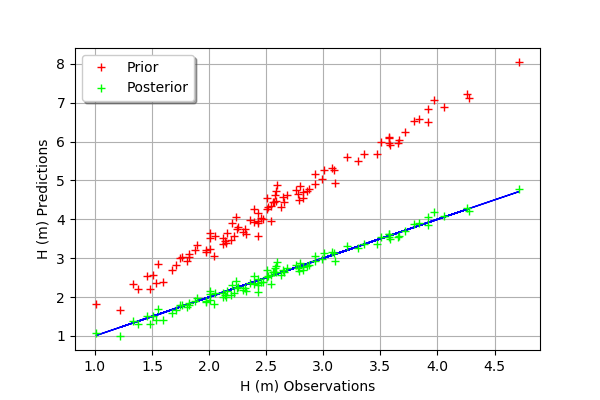
We see that there is a much better fit after calibration, since the predictions are close to the diagonal of the graphics.
[31]:
observationError = calibrationResult.getObservationsError()
observationError
[31]:
Normal(mu = -0.00982084, sigma = 0.107725)
We can see that the observation error is close to have a zero mean and a standard deviation equal to 0.1.
[32]:
graph = mypcr.drawResiduals()
graph.setLegendPosition("topleft")
graph
[32]:
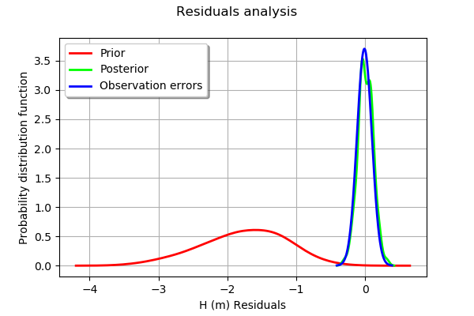
The analysis of the residuals shows that the distribution is centered on zero and symmetric. This indicates that the calibration performed well.
Moreover, the distribution of the residuals is close to being gaussian.
[33]:
_ = mypcr.drawParameterDistributions()
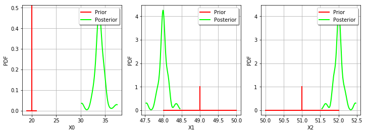
Gaussian linear calibration¶
The standard deviation of the observations.
[34]:
sigmaH = 0.5 # (m^2)
Define the covariance matrix of the output Y of the model.
[35]:
errorCovariance = ot.CovarianceMatrix(1)
errorCovariance[0,0] = sigmaH**2
Define the covariance matrix of the parameters to calibrate.
[36]:
sigmaKs = 5.
sigmaZv = 1.
sigmaZm = 1.
[37]:
sigma = ot.CovarianceMatrix(3)
sigma[0,0] = sigmaKs**2
sigma[1,1] = sigmaZv**2
sigma[2,2] = sigmaZm**2
sigma
[37]:
[[ 25 0 0 ]
[ 0 1 0 ]
[ 0 0 1 ]]
The GaussianLinearCalibration class performs the gaussian linear calibration by linearizing the model in the neighbourhood of the prior.
[38]:
algo = ot.GaussianLinearCalibration(mycf, Qobs, Hobs, thetaPrior, sigma, errorCovariance,"SVD")
The run method computes the solution of the problem.
[39]:
algo.run()
[40]:
calibrationResult = algo.getResult()
Analysis of the results¶
The getParameterMAP method returns the maximum of the posterior distribution of .
[41]:
thetaStar = calibrationResult.getParameterMAP()
thetaStar
[41]:
[24.5218,48.0956,51.9044]
[42]:
mypcr = CalibrationAnalysis(calibrationResult,mycf, Qobs,Hobs)
[43]:
graph = mypcr.drawObservationsVsInputs()
graph.setLegendPosition("topleft")
graph
[43]:
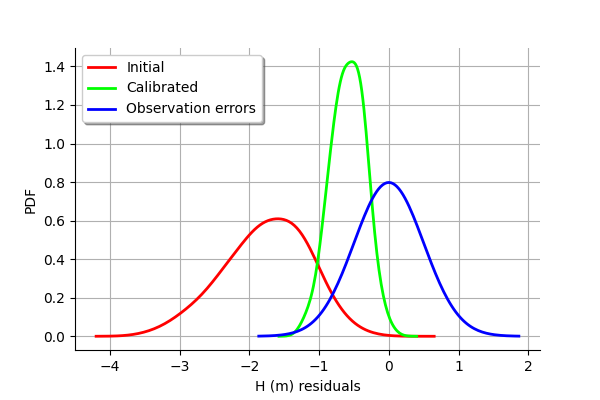
We see that the output of the model after calibration is closer to the observations. However, there is still a distance from the outputs of the model to the observations. This indicates that the calibration cannot be performed with this method.
[44]:
mypcr.drawObservationsVsPredictions()
[44]:
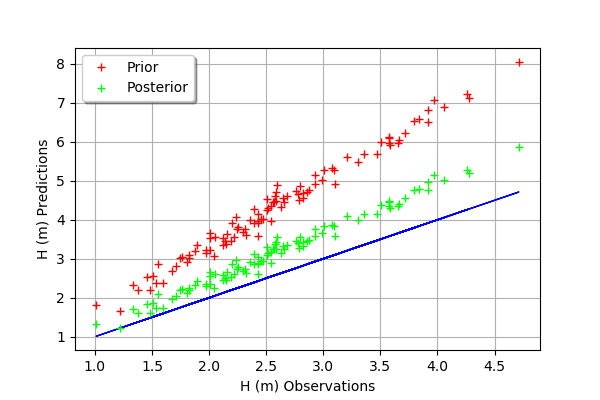
In this case, the fit is better after calibration, but not perfect. Indeed, the cloud of points after calibration is not centered on the diagonal.
[45]:
graph = mypcr.drawResiduals()
graph.setLegendPosition("topleft")
graph
[45]:
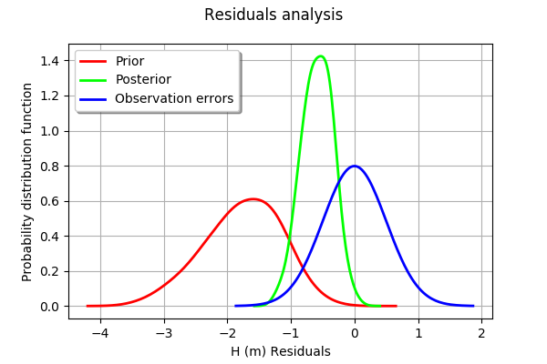
We see that the distribution of the residual is not centered on zero: the mean residual is approximately -0.5, which implies that the predictions are, on average, smaller than the observations. This is a proof that the calibration cannot be performed with this method in this particular case.
The getParameterPosterior method returns the posterior gaussian distribution of .
[46]:
distributionPosterior = calibrationResult.getParameterPosterior()
distributionPosterior
[46]:
Normal(mu = [24.5218,48.0956,51.9044], sigma = [4.08431,0.816862,0.816862], R = [[ 1 0.498657 -0.498657 ]
[ 0.498657 1 0.498657 ]
[ -0.498657 0.498657 1 ]])
We can compute a 95% confidence interval of the parameter .
[47]:
distributionPosterior.computeBilateralConfidenceIntervalWithMarginalProbability(0.95)[0]
[47]:
[14.9481, 34.0954]
[46.1809, 50.0104]
[49.9896, 53.8191]
We see that there is a large uncertainty on the value of the parameter which can be as small as 14 and as large as 34.
We can compare the prior and posterior distributions of the marginals of .
[48]:
_ = mypcr.drawParameterDistributions()
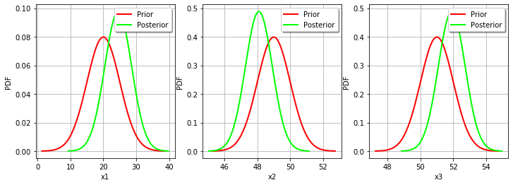
The two distributions are different, which shows that the calibration is sensible to the observations (if the observations were not sensible, the two distributions were superimposed). Moreover, the two distributions are quite close, which implies that the prior distribution has played a roled in the calibration (otherwise the two distributions would be completely different, indicating that only the observations were taken into account).
Gaussian nonlinear calibration¶
The GaussianNonLinearCalibration class performs the gaussian nonlinear calibration.
[49]:
algo = ot.GaussianNonLinearCalibration(mycf, Qobs, Hobs, thetaPrior, sigma, errorCovariance)
The run method computes the solution of the problem.
[50]:
algo.run()
[51]:
calibrationResult = algo.getResult()
Analysis of the results¶
The getParameterMAP method returns the maximum of the posterior distribution of .
[52]:
thetaStar = calibrationResult.getParameterMAP()
thetaStar
[52]:
[30.6807,47.6248,52.3752]
[53]:
mypcr = CalibrationAnalysis(calibrationResult,mycf, Qobs,Hobs)
[54]:
graph = mypcr.drawObservationsVsInputs()
graph.setLegendPosition("topleft")
graph
[54]:
We see that the output of the model after calibration is in the middle of the observations: the calibration seems correct.
[55]:
mypcr.drawObservationsVsPredictions()
[55]:
The fit is excellent after calibration. Indeed, the cloud of points after calibration is on the diagonal.
[56]:
mypcr.drawResiduals()
[56]:
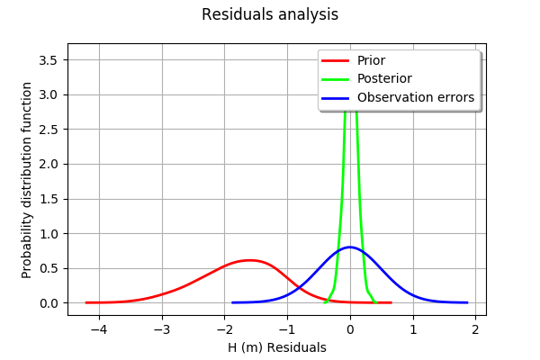
We see that the histogram of the residual is centered on zero. This is a proof that the calibration did perform correctly.
The getParameterPosterior method returns the posterior gaussian distribution of .
[57]:
distributionPosterior = calibrationResult.getParameterPosterior()
We can compute a 95% confidence interval of the parameter .
[58]:
distributionPosterior.computeBilateralConfidenceIntervalWithMarginalProbability(0.95)[0]
[58]:
[30.6113, 31.1594]
[47.5635, 47.6337]
[52.3663, 52.4365]
We see that there is a small uncertainty on the value of all parameters.
We can compare the prior and posterior distributions of the marginals of .
[59]:
_ = mypcr.drawParameterDistributions()
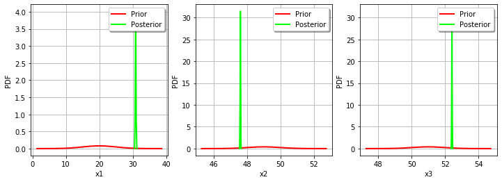
The two distributions are very different, with a spiky posterior distribution. This shows that the calibration is very sensible to the observations.
Tuning the posterior distribution estimation¶
The “GaussianNonLinearCalibration-BootstrapSize” key controls the posterior distribution estimation.
If “GaussianNonLinearCalibration-BootstrapSize” > 0 (by default it is equal to 100), then a bootstrap resample algorithm is used to see the dispersion of the MAP estimator. This allows to see the variability of the estimator with respect to the finite observation sample.
If “GaussianNonLinearCalibration-BootstrapSize” is zero, then the gaussian linear calibration estimator is used (i.e. the
GaussianLinearCalibrationclass) at the optimum. This is called the Laplace approximation.
[60]:
ot.ResourceMap_SetAsUnsignedInteger("GaussianNonLinearCalibration-BootstrapSize",0)
[61]:
algo.run()
[62]:
calibrationResult = algo.getResult()
[63]:
_ = mypcr.drawParameterDistributions()
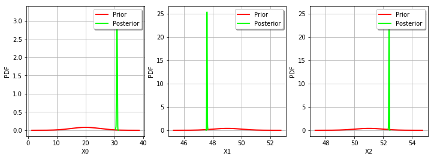
As we can see, this does not change much the posterior distribution, which remains spiky.